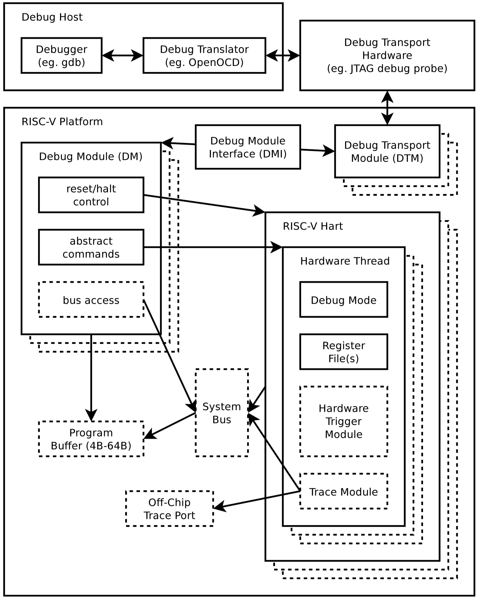

[RISC-V Architecture Training] Uncore
–
Uncore
CPU core is fun, but uncore is the real work.
Uncore / components
- Cache (already discussed)
- Interrupt controller
- Network Fabric
- Debug

Interrupt recap
3 types of interrupts
- External: peripheral devices
- Software: inter-processor interrupt
- Timer: timely schedule tasks
PLIC (platform level interrupt controller)
- For external interrupts
- Aggregation of multiple external interrupts
- Provide enable/priority
CLINT (core level interruptor)
- For software & timer interrupts
- Provide memory-mapped software/timer interrupt CSRs
PLIC (platform-level interrupt controller)
MSI vs. IRQ
| MSI (message signaled interrupt) | IRQ (physical wired interrupt) |
|---|---|
| Relatively newer | Traditional and easy to understand |
| More complex device and interrupt controller | Simple to implement. Widely supported |
| Scalable, especially for morden large SoCs | Don’t scale well |
| In-band access, easy for timing/clock/etc. | Out-of-band, nightmare for physical design if many |
Interrupt controller for RISC-V: PLIC
- Simple & easy to use
- IRQ-style interrupt aggregator
- Support programmable priority and enable
- Support multiple source and multiple target
PLIC / function diagram
IRQ-style interrupt aggregator that support enable/priority and claim/complete flow
- Function components
- Gateway
- Forward enabled interrupts
- Stop further interrupts if current one is not claimed
- PLIC core
- Order interrupts by their priority
- Filter interrupt with priority threshold
- Gateway

PLIC / configurations
-
Interrupt enable
- Every interrupt initiator has an enable bit
-
Interrupt priority
- Every interrupt initiator has a priority level assigned. By default 8 levels, the larger the number the higher priority it has
- Level 0 is reserved for “never interrupt”
-
Priority threshold
- Only interrupts have higher priorities will presented to target
PLIC / software-hardware workflow
- Signalled: IRQ from source to gateway
- Request: IRQ from gateway to core
- Notification: IRQ assert from core to target
- Claim: memory read from target to core, start trap handler
- Response: IRQ deassert from core to target
- … (waiting for trap handler to finish)
- Complete: memory write from target to core

PLIC / interrupt handler

CLINT
Timer interrupt
- Memory-mapped CSR
mtimeandmtimecmp
Software interrupt
- Memory-mapped CSR
msip(machine-mode software interrupt pending)
CLINT / interrupt handler
Timer interrupt
- Set timer: CPU read
mtime, thenwritemtimecmpwith number larger thanmtime - Claim: by writing
mtimecmpwith number smaller thanmtimeto disable/clear timer interrupt
Software interrupt
- Raise software interrupt: write memory-mapped CSR
msip - Claim: clear
msip
TileLink
Goal of TileLink
- Non-ARM interconnect protocol
- Cannot use ARM’s open protocol: AMBA (CHI, ACE, AXI, AHB, APB)
- They are open, but fully controlled by ARM. Huge problem for ARM’s rival.
- Protocol framework to unify different usage scenarios
- Clean slate, start from scratch, learn from priors
- Decouple message protocol from wire protocol
- Even support off-chip connection
- Simple & hardware-friendly
TileLink is also developed inside UCB BAR.
TileLink is not tied with RISC-V. RocketChip uses TileLink.
TileLink / overview
Different usage scenarios
- Point-to-point simple protocol for data transfer
- More complicated data transfer with burst, atomic support
- Cache-coherent hardware support
5 levels of priorities/channels: A, B, C, D, E
- Avoid deadlock: acknowledges have higher priority
- Support out-of-order design for better performance, while support ordering when needed
- Not always need 5 levels of priorities. Simple data transfer will only need 2
Point-to-point, master-slave model
- No race for ownership physically
TileLink / conformance levels
Corresponding to 3 usage scenarios
TL-UL (TileLink uncached light-weight)
- Just read and write operations
TL-UH (TileLink uncached heavy-weight)
- Add burst, atomic support
- Add hint operations, such as prefetch
TL-C (TileLink cached)
- Add support to cache-coherent
TileLink / channel priorities
Channel A, B, C, D, E
- Each channel has its specified priority
- In the order of \(A<B<C<D<E\)
- Channel has only one direction
- Physically independent
TileLink / TL-UL
- Channel A: memory access request from master to slave
- Channel D: memory access response from slave to master

TileLink / TL-UH
- Arithmetic & logical: atomic operation (read-modify-write)
- Hint: prefetch data with intent to read/write
TileLink / TL-C
- Acquire: master to slave
- To obtain cache block to make it local, or write permission of a cache block it already has
- Grand: slave to master
- As a response to acquire
- Probe: slave to master
- To query or modify the permission of cache
- Release: master to slave
- To downgrade its permission of a cache block
TileLink / wire protocol
- Physically independent channel for each priority (A/B/C/D/E)
- Ready-valid hand-shaking protocol
- The waiting time could be arbitrary
- Burst transmissions + serialization (variable bus width)
- Between burst beats, only data field changes
- Size must align with 2^N, the size field is just the N
- Number of beats is calculated from size, no special indicator
TileLink / memory read example

TileLink / memory write example
TileLink / cache coherency
Hardware supported cache coherency will be discussed in later session
TileLink / products
SiFive’s CPU core complex is built on TileLink. So it’s silicon proven.
- Crossbar, adapters, switch
- Snooping-based cache-coherent manager
- Bridges to AMBA protocol
https://github.com/chipsalliance/rocket-chip/tree/master/src/main/scala/tilelink
Problem? All in Chisel …
Debug / spec
What is debug spec for?
- Debug software, either embedded or kernel
- Help with system bring up before any working CPU on the chip
- Standardize interface between software and hardware debugger
What is debug spec not for?
- Find hardware bugs, but can help to narrow them down
3 parts of the debug system
- Debugger software running on the host, like GDB or some GUI IDE
- Debugger hardware connecting host to target, e.g. TRACE32, J-Link
- Silicon block inside the target chip
- Auto discovery; protocol translation; message passing; runtime control; cross-triggering; etc
Debug spec
principle
- “Software is King”
- Helping software (including kernel) debug is the primary goal
- Decoupled from implemetation, both silicon and debugger
- Simple & hardware friendly (again)
Debug spec / system diagram

- Need to distinguish
- Inside / outside of the chip
- Software / hardware
Debug / components
DTM (debug transport module)
- General interface for different protocols, e.g. JTAG, SPI, USB, etc.
- Right now, only JTAG is defined, but SPI is also supported
DMI (debug module interface)
- Interface bus between DTM and DM
- It is implemenataion dependent, can be TileLink or AMBA
DM (debug module)
- The core of the debug silicon block
- Provides runtime control, abstract commands, function fabric access
Debug / function of debug module
Reset control
- Output a global reset signal,
ndmreset(non-debug module reset) - So that we can debug the first instruction out of reset
Selecting harts
- Debugger can select one or multiple harts to debug
Run control
- Halt, resume, halt-on-reset, reset, singl-step
Abstract commands
- Abstract commands can be injected by debugger to direct CPU carrying out specific commands
- Access registers: GPR, CSR, FPR, etc.
- Quck access: quickly inject some commands for CPU to execute while it’s still running
- Access memory
Debug / triggering
How to go into debug mode?
- Breakpoint
- Also
EBREAKinstruction
- Also
- Watchpoint: register
- Cross-trigger
- Other core encounters a breakpoint
- Other component hits certain condition
Debug / security
Another big topic in debug is security.
- Debug system is powerful, can access almost all the resource
- Big security loophole if left open after production phase
What to do?
- Use fuse bit to disable debug after production phase
- Add authentication step before going into debug mode
Debug / debugger
Software running on the host. No matter has GUI or not.
Open source: OpenOCD + GDB
- Currently only support JTAG interface
- Support runtime control, abstract commands
- Support hardware breakpoints & watchpoints
Commercial
- Lauterbach: TRACE32
- Segger: J-Link
- UltraSoC: UltraDev2
Debug / heterogenous SoC
Discussion: what is in your pocket?
Summary
Uncore includes blocks that support CPU core’s functionality, but not peripheral.
.footnote[Note: ISA includes specs that defines software/hardware interface]
Interrupt controller
- 3 types of interrupts
- External/software/timer
- PLIC: external interrupt aggregator
- CLINT: software/timer interrupt
- Software/hardware co-workflow
Debug
- Run-control and abstract command
- Decouple implementation of software/hardware, host/target
Cache
- No spec, implementation dependent
Network fabric
- No spec, implementation dependent
- TileLink: not a part of RISC-V ISA spec